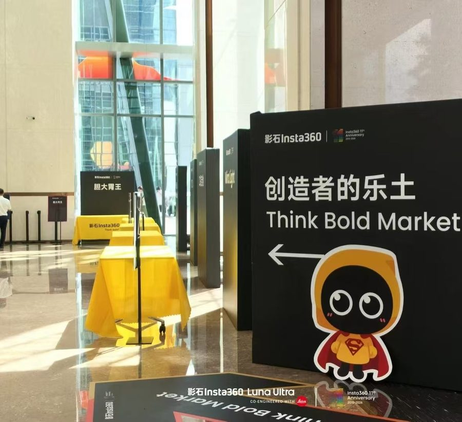
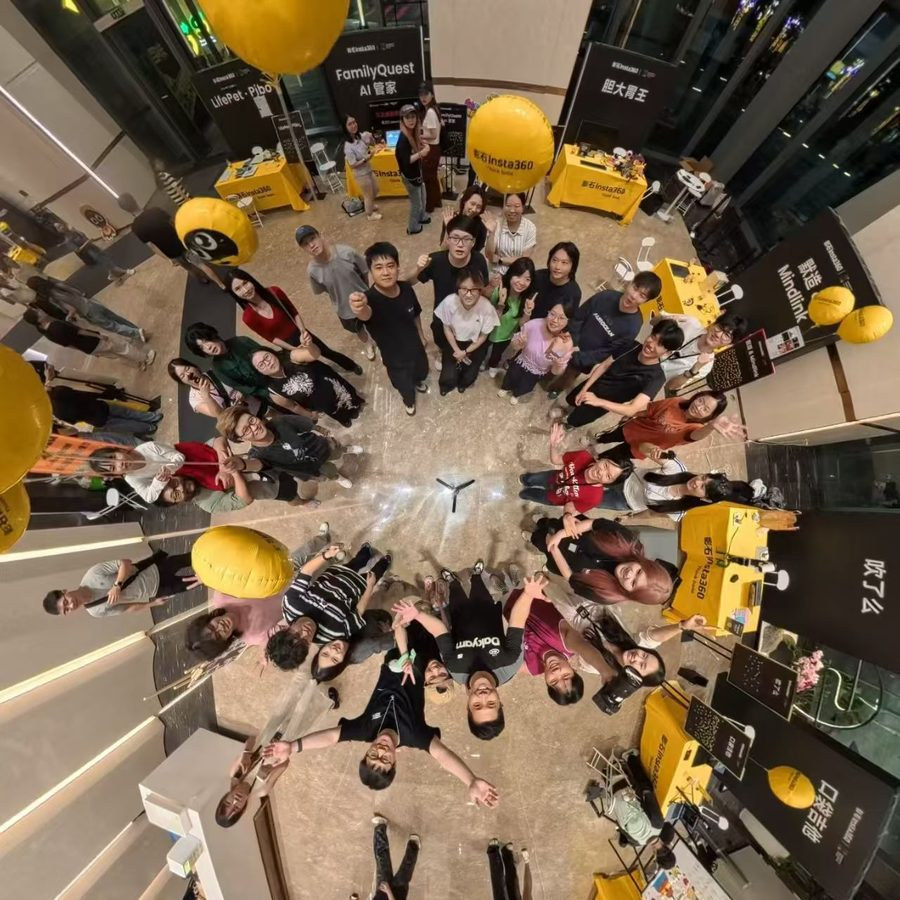
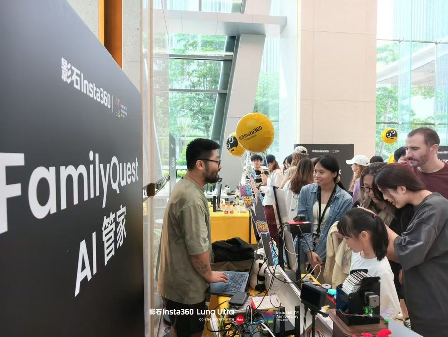
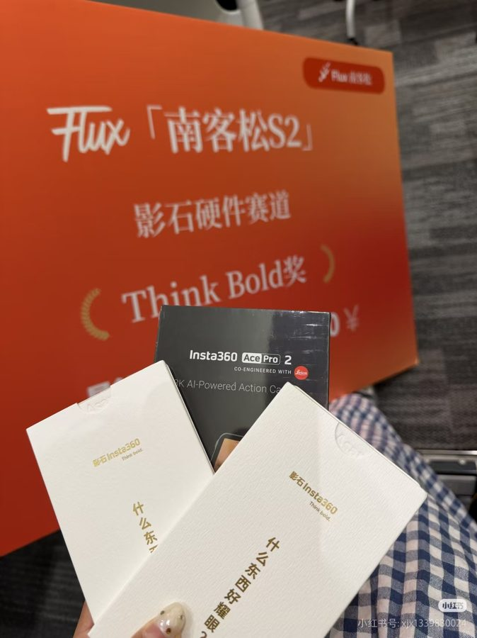
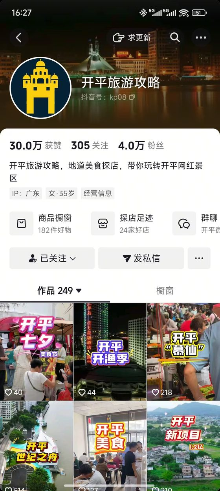
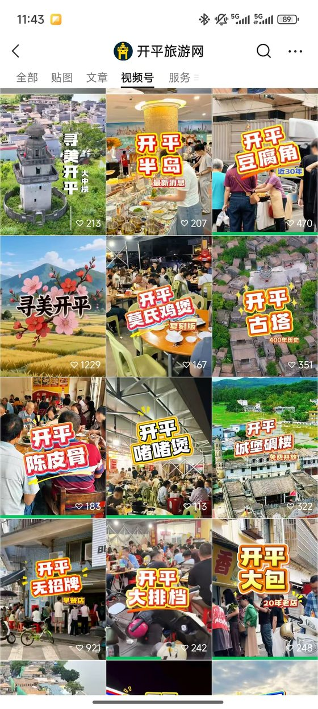
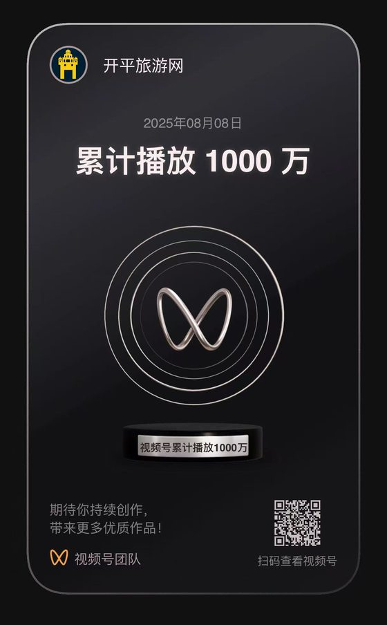

杨焕琳
深圳大学汉语言文学（27 届）本科生，擅长将用户洞察转化为可感知、可传播、可增长的 内容与运营动作。
3 个 AI 落地项目 · 宾夕法尼亚大学交流 · 10 万+ 粉丝自媒体 · 235 万+ 竞赛营收
关于我
我是杨焕琳，深圳大学汉语言文学（27 届）本科生。如果用一句话概括我：一个能把用户洞察变成增长结果的 AI Native 运营人——三个从 0 到 1 的项目与多段实战，都在验证同一件事。
AI 工具化与落地能力：我不只自己用 AI，更把 AI 变成团队能用的工具。在联想从 0 到 1 搭建覆盖获客、 分层、触达、外呼全流程的 AI 销售助手，沉淀为部门可复用的工具矩阵并推广至 50+ 人销售部门；在影石搭建 AI 达人筛选工作流，把「凭经验选达人」升级为可量化、可复现的流程；个人自媒体也以 AI 辅助内容生产提效约 50%。
数据驱动与增长判断：在同程旅行独立搭建 SQL 运营看板、运营 1.7 万私域分层模型，通过归因分析定位增长机会， 驱动总 GMV 环比增长 66.49%；在《益果兴乡》用 900+ 份问卷与百余位访谈交叉验证，锁定「产地信任度 × 文化叙事」 两大转化变量，跑通 235 万营收。
内容敏感度与表达力：汉语言文学功底 + 实战检验。个人自媒体「开平旅游网」做到 10 万+ 粉丝、 1000 万+ 播放，单条视频播放破百万；在 TCL 主导 10 分钟品牌长片创意与高管访谈系列，累计产出 10+ 篇内外渠道内容。
项目统筹与商业闭环：在影石统筹 12 场黑客松科技赛事全链路，撬动上千名开发者触达；作为《活遗活现》 项目负责人，定义「AI 数字人讲解非遗」产品形态并拿下 100 万预购订单（互联网+ 国赛铜奖），跑通 技术→产品→商业订单的完整闭环。
这四项能力指向同一个目标：让运营、营销与市场动作，既有内容的温度，也有数据与 AI 的效率。这正是我想在 贵司运营 / 营销 / 市场岗位上继续做的事。
AI NATIVE
三个从 0 到 1 的 AI 实战项目——从真实业务痛点出发，把 AI 能力沉淀为可复用、可推广的工具。
销售 AI 助手 · 销售全流程提效工具集
联想 TO B 销售场景：把销售「低杠杆高频」的看信息、找客户、想话术、做准备交给 AI 引擎。 四大模块覆盖获客到成交准备，1 人运营、50+ 销售零部署使用，已在深圳销售部门全部门推广。
《活遗活现》AI 数字人产品
大创优秀结项项目负责人：定义「AI 数字人讲解非遗」产品形态，落地故宫、泉州非遗馆并实现商业转化。
KOL 达人营销投放决策系统
影石全球达人营销团队：把「凭经验选达人」升级为三步筛选流程—— 先筛掉不合格的，再从 6 个角度给达人打分（每个推荐附证据），最后在预算内搭配出一组互补的达人。 独立完成 79 页六册方案，系统以 Skill 形态交付。
AI 作品集 · GitHub
两个实战项目的公开仓库（脱敏版）：README、Skill 文件与方案文档，可在线查看与复用。
《传媒学与数据科学：从用户行为到预测模型研发》
宾大终身教授 Manuel González Canché 全英授课，以「数据挖掘 + 人工智能」为核心框架， 完成从社交媒体数据收集、文本挖掘与 NLP、网络分析到用户行为预测建模的完整训练， 成绩 93.20。
注：人工智能时代，国家启动全国人工智能拔尖计划人才项目，在国内多所顶尖高校选拔跨学科多维度人才， 与国外顶尖高校交流，并参与国际教授的线上授课与研究项目。
官方成绩单 & 课程大纲


点击查看课程介绍、教授背景与完整证书 →
其他项目经历
AI 项目之外，这些项目体现了不同的综合能力
科技赛事 × 创造者集市 × 人才生态
展现能力：活动运营与生态运营。统筹百万预算与百台设备，完成候鸟 300 黑客松、探月黑客松、 南客松 S2 硬件赛道等 12 场科技赛事的赞助合作与全链路运营；落地公司 11 周年 「创造者乐土 Think Bold Market」创造者集市；从 0 到 1 调研「创造者乐土」技术社区方案， 链接清华、华工、电科等高校科技社团——与极客人才、高校人才形成长期紧密的生态运营。




《益果兴乡》整合营销
展现能力：项目统筹与商业落地。粤桂农特产整合营销项目负责人，从 900+ 问卷调研与深度访谈， 到确立「产地溯源 + 文化 IP」品牌定位，再到双渠道 235 万营收的完整闭环。
个人自媒体「开平旅游网」
展现能力：内容敏感度与冷启动增长。洞察家乡文旅内容空白，从 0 运营公众号 / 视频号 / 抖音 / 小红书矩阵， 用 AI 辅助内容生产提效约 50%，跑通「内容 → 流量 → 变现」闭环。



同程旅行 · 海外运营实战
展现能力：数据驱动的精细化运营。多平台差异化内容策略 + 1.7 万私域分层运营， SQL 看板替代手工汇总、归因分析定位增长机会，驱动总 GMV 环比增长 66.49%。
学生会外联部长 ＋ 模联国奖
展现能力：资源链接与全英表达。负责小米、新东方等赞助洽谈、跨 10+ 高校联络与多场校级活动策划执行； 中国模拟联合国大会、北京大学亚洲模拟联合国大会 2 次全英参赛获国家级奖项。
技能栈
运营/营销核心能力 + 数据能力 + AI 工具链
📣 运营与营销
📊 数据能力
🤖 AI 工具链
一起聊聊？
正在寻找 2027 届运营 / 营销 / 市场方向的实习与校招机会